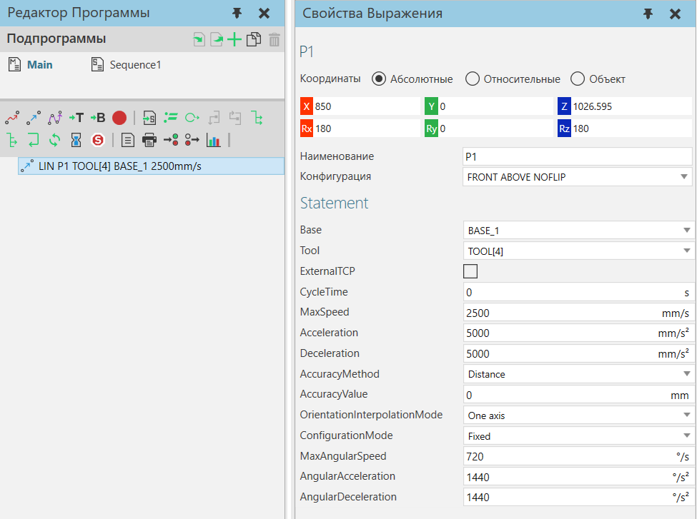
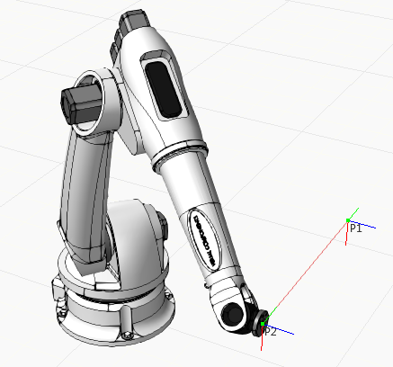
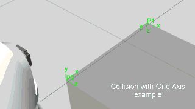

Оператор Линейное движение — это движение, при котором робот использует свою текущую конфигурацию для достижения положения на кратчайшем возможном расстоянии.

Пример. Линейное движение робота от P1 до P2

Свойства
Позиция
Название |
Описание |
|---|---|
Позиция |
Определяет матрицу положения, используя координаты XYZ и значения вращения Rx, Ry и Rz. |
Наименование |
Определяет название позиции. |
Конфигурация |
Определяет конфигурацию робота в позиции. Названия конфигураций определяются кинематическим поведением робота и могут зависеть от производителя. |
Statement
Название |
Описание |
|---|---|
Base |
Определяет базу, используемую роботом для оператора. |
Tool |
Определяет систему координат инструмента, используемую роботом для оператора. |
ExternalTCP |
Определяет режим интерполяции для положения. False использует интерполяцию Base to Tool. True использует интерполяцию Tool to Base. |
MaxSpeed |
Определяет максимальную декартову скорость (мм/с), используемую для расчета траектории положения. |
Acceleration |
Определяет максимальное декартово ускорение движения (мм/с^2), используемое для расчета траектории положения. |
CycleTime |
Определяет общее время, прошедшее для движения, от начала до конца. Нулевое значение означает, что робот игнорирует время цикла. Значение больше нуля означает, что робот отменяет настройки скорости, чтобы масштабировать движение по времени цикла. Например, время цикла 5 секунд означает, что движение, которое в противном случае могло бы занять 2 секунды, теперь будет выполняться 5 секунд. |
Deceleration |
Определяет максимальное декартово замедление движения (мм/с^2), используемое для расчета траектории положения. |
AccuracyMethod |
Определяет метод типа точности, используемую для положения. |
AccuracyValue |
Определяет предел, используемый в AccuracyMethod. |
OrientationInterpolationMode |
Определяет режим интерполяции ориентации для линейного перемещения. One Axis использует ось с наименьшим углом поворота для инструмента. Это режим по умолчанию для операторов Linear Motion. Two Axis выбирает ось X, Y или Z и ее направление Tool. Сначала применяется угол поворота для выбранной оси, а затем другие повороты основаны на этой оси. Three Axis интерполирует либо WPR (рысканье, тангаж и крен), либо ZYZ (угол Эйлера) для цели и вычисляет последовательность вращений. Wrist интерполирует запястные суставы робота, чтобы свести к минимуму их движение. В этом примере показано ограничение One Axis, в котором происходит столкновение.  В этом примере предотвращается столкновение с помощью двух осей Z.
Смотрите Технические Примечания для получения дополнительной информации о том, как вращение инструмента рассчитывается и применяется для линейных перемещений. |
ConfigurationMode |
Определяет режим конфигурации для соединений, управляемых контроллером робота во время интерполяции линейного движения. Fixed использует текущую конфигурацию робота. Follow frame использует конфигурацию, наиболее близкую к предыдущим совместным значениям робота, поэтому робот попытается сохранить текущую конфигурацию с небольшими изменениями. Interpolate joint values использует конфигурацию, определяемую двухточечной интерполяцией совместных значений. |
MaxAngularSpeed |
Определяет максимальную угловую скорость (мм/с), используемую для расчета траектории положения. |
AngularAcceleration |
Определяет максимальное угловое ускорение движения (мм/с^2), используемое для расчета траектории положения. |
AngularDeceleration |
Определяет максимальное угловое замедление движения (мм/с^2), используемое для расчета траектории положения. |

·Режим одной оси для интерполяции ориентации аналогичен кватернионному SLERP. Он вычисляет ось кратчайшего поворота, предполагая ось X, если поворот составляет 180 градусов.
·Двухосевой режим для интерполяции ориентации сначала проецирует вращение на выбранную ось, затем вычитает это вращение из общего вращения, а затем вычисляет кватернионное вращение SLERP для оставшегося вращения. Это создает движение, которое сводит к минимуму вращение выбранной оси, что полезно для роботов с осевыми инструментами, такими как сварочные горелки, фрезеры и т. д. Повороты вокруг выбранной оси и расчетной оси интерполируются независимо.
·Трехосевой режим для интерполяции ориентации разлагает вращение либо на его угол рыскания-тангажа-крена, либо на углы Эйлера, и интерполирует каждый угол независимо.
·В режиме запястья для интерполяции ориентации робот выполняет совместную интерполяцию суставов запястья робота, а затем регулирует основные оси робота так, чтобы положение рамы соответствовало линейному пути. Этот режим сводит к минимуму перемещение запястных суставов робота, но движения различаются в зависимости от формы и размера робота.
·Если режим интерполяции ориентации не является режимом запястья, также имеется профиль ускорения/замедления, который рассчитывается на основе значений MaxAngularSpeed, AngularAcceleration и AngularDeceleration. При многоосевом вращении это основано на оси вращения с самым длинным вращением. то есть по наибольшему углу. В режиме запястья параметры ускорения/замедления лучезапястного сустава определяют профиль ускорения/замедления интерполяции ориентации, поэтому значения MaxAngularSpeed, AngularAcceleration, AngularDeceleration не используются. Профиль ускорения/замедления с интерполяцией ориентации затем синхронизируется с профилем ускорения/замедления положения, а также любыми профилями ускорения/замедления внешнего соединения по принципу, согласно которому все профили настраиваются на самый медленный профиль, чтобы время разгона/привода/торможения было идентичным.